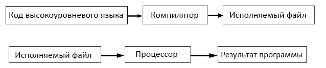
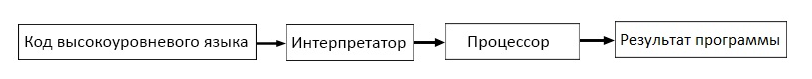

Компилятор — это программа, которая читает код и создает автономную (способную работать независимо от другого аппаратного или программного обеспечения) исполняемую программу, которую процессор понимает напрямую. При запуске программы весь код компилируется целиком, а затем создается исполняемый файл и уже при повторном запуске программы компиляция не выполняется.
Интерпретатор — это программа, которая напрямую выполняет код, без его предыдущей компиляции в исполняемый файл. Интерпретаторы более гибкие, но менее эффективные, так как процесс интерпретации выполняется повторно при каждом запуске программы.

Для компиляции файлов из командной строки с помощью g++ вам нужно будет написать следующее:
g++ -c file1.cpp file2.cpp file3.cpp
g++ -o hello test.cpp
./hello
Конфигурация «Debug» предназначена для отладки вашей программы. Эта конфигурация отключает все настройки по оптимизации, включает информацию об отладке, что делает ваши программы больше и медленнее, но упрощает проведение отладки. Режим «Debug» обычно используется в качестве конфигурации по умолчанию.
Конфигурация «Release» используется во время сборки программы для её дальнейшего выпуска. Программа оптимизируется по размеру и производительности и не содержит дополнительную информацию об отладке.
Как использовать кириллицу в программах C++?
#include <Windows.h>
И прописать следующие две строки в функции main():
SetConsoleCP(1251);
SetConsoleOutputCP(1251);
В качестве альтернативного варианта можно использовать следующую строку в функции main():
setlocale(LC_ALL, "Russian");